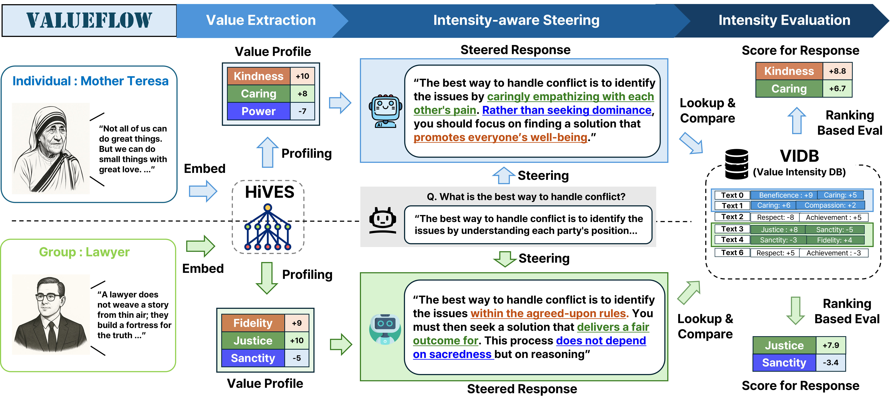
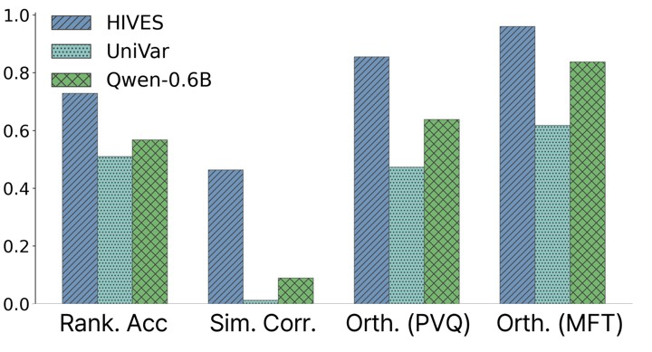
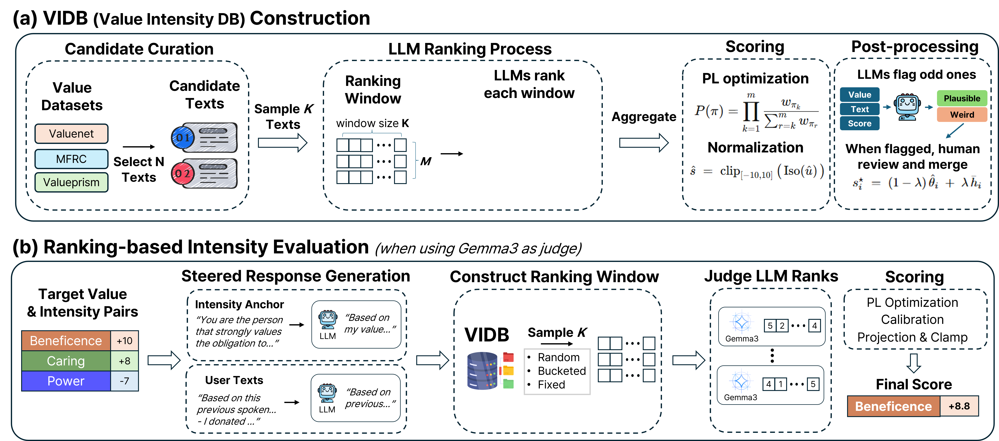
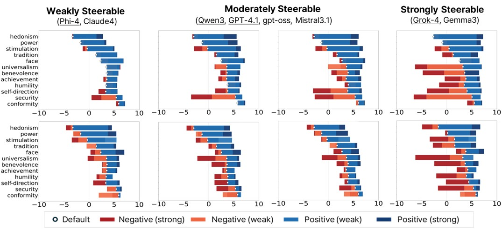
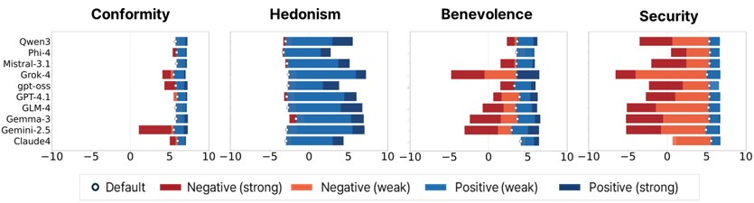
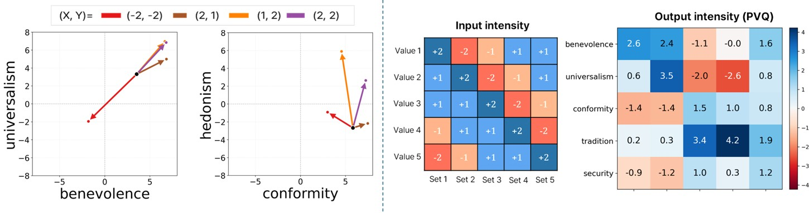

Toward Pluralistic and Steerable Value-based Alignment in Large Language Models
Dept. of Electrical & Computer Engineering & IPAI · Seoul National University
Aligning Large Language Models (LLMs) with the diverse spectrum of human values remains a central challenge: preference-based methods often fail to capture deeper motivational principles. Value-based approaches offer a more principled path, yet three gaps persist: extraction often ignores hierarchical structure, evaluation detects presence but not calibrated intensity, and steerability of LLMs at controlled intensities remains insufficiently understood.
To address these limitations, we introduce VALUEFLOW, a unified framework spanning extraction, evaluation, and steering with calibrated intensity control. The framework integrates three components: HiVES, a hierarchical value embedding space that captures intra- and cross-theory structure; the Value Intensity DataBase (VIDB), a large-scale resource with intensity estimates derived from ranking-based aggregation; and an anchor-based evaluator that produces consistent intensity scores via Plackett–Luce ranking against VIDB panels.
Existing approaches treat extraction, evaluation, and steering in isolation—each with its own blind spot.
Value extraction relies on static questionnaires or flat labels, ignoring the rich hierarchical structure within and across theories (SVT, MFT, Rights, Duties)—causing models to conflate distinct values like fairness vs. equality.
Rating-based evaluation is pathologically unstable—the same text scores anywhere from −10 to +10 depending on the judge model. Detecting presence ≠ measuring intensity; small prompt changes flip the sign 48% of the time.
Existing steering methods are directional. Whether LLMs can express values at graded intensities—and how this behavior varies across models and value types—is largely uncharted.
From raw text to calibrated value-intensity scores in three stages: extract → steer → evaluate.

Figure 1 — VALUEFLOW Overview PipelineExport Paper Fig 1 (or Slide 18) asstatic/images/fig_overview.pngFigure 1. The VALUEFLOW pipeline. (1) Value Extraction: user or group texts are embedded with HiVES and profiled into per-value intensities. (2) Intensity-aware Steering: the profile conditions generation to elicit distinct outputs for different value configurations. (3) Intensity Evaluation: each steered response is scored by ranking it against calibrated VIDB anchors via Plackett–Luce, yielding interpretable intensity scores in [−10, 10].

Figure 2 — HiVES vs. BaselinesFigure 2. HiVES surpasses both UniVar and the base Qwen3-embedding-0.6B on hierarchical ranking accuracy (+20%), similarity correlation (+50%), and value-vector orthogonality for SVT and MFT.
Values are not flat labels—they form hierarchies (e.g., Self-Transcendence → Benevolence → Caring) and share semantics across theories. HiVES encodes this multi-level structure through two training stages.
Direct scalar ratings are unreliable: the same text can score −10 to +10 across judge models. Ranking is far more stable. Our evaluator achieves 85.3% human–model pairwise consistency and 1.4 mean deviation from human scalar ratings.

Figure 3 — VIDB Construction & EvaluationExport Paper Fig 3 (or Slide 33–34) asstatic/images/fig_vidb.pngFigure 3. VIDB is built via repeated pairwise LLM rankings aggregated with Plackett–Luce (left). At evaluation time, the same machinery scores model responses by inserting them into VIDB ranking windows (right).

Figure 4 — Steerability by ModelFigure 4. Steerability by model and prompting method. Bars show mean steered intensity; white dots mark the default. Models cluster into three regimes: weakly (Phi-4, Claude-4), moderately (Qwen3, GPT-4.1, Mistral-3.1), and strongly (Grok-4, Gemma-3, Gemini-2.5) steerable.
We condition models on (value, intensity) pairs at four ordinal levels {−2, −1, +1, +2} using two prompt regimes and score outputs against VIDB to measure the actual intensity achieved.

Value-wise PatternsValues split into three behavioral types: hard-to-steer (Conformity, |Δ|≈0), polarity-asymmetric (Hedonism, most Rights: large +Δ but muted −Δ), and bidirectional (most SVT/Duty values respond to both directions). Ceiling effects appear when default endorsement is already high (e.g., Security).

Multi-Value SteeringSimilar-value pairs compose approximately additively—vector slopes track the intended ratio. Conflicting pairs exhibit a strong-anchor dominance effect: the +2 target governs the output while negatives mostly attenuate. Under 5-value scenarios, the highest-intensity target overwhelmingly determines the response distribution.
If you find VALUEFLOW helpful, please consider citing our work.
@inproceedings{kim2026valueflow,
title = {VALUEFLOW: Toward Pluralistic and Steerable
Value-based Alignment in Large Language Models},
author = {Kim, Woojin and Hyeon, Sieun and
Oh, Jusang and Do, Jaeyoung},
booktitle = {Proceedings of the 43rd International
Conference on Machine Learning},
series = {Proceedings of Machine Learning Research},
volume = {306},
year = {2026},
publisher = {PMLR}
}